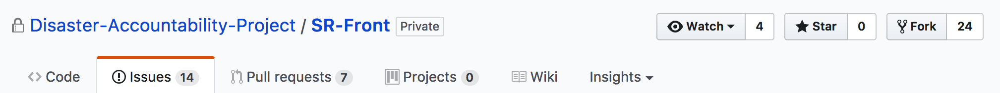

Disaster Accountability Project
https://github.com/schuchard
BrieBug
Digital Agency that focuses on
web and mobile solutions
SmartResponse
SmartResponse
SmartResponse is an online platform that collects and analyze location specific, pre- and post-disaster data from local, state and national organizations providing humanitarian assistance.
SmartResponse is the first independent, data-driven resource to display location-specific information from these organizations including: budget, legal/registration status, types of services provided, number of staff on the ground, history, partners and affiliations, start and end dates, and total funds raised and spent on that particular response.
Relief isn’t getting to those who need it
Despite hundreds of relief groups receiving billions, basic services are not reaching those who need it most. Donations are sitting in the bank, while suffering that should be prevented isn’t. DAP is working to improve the effectiveness of relief by focusing on the transparency and public accountability of agencies and organizations with critical life-saving responsibilities.
The public is
“donating in the dark.”
After major disasters occur, hundreds, if not thousands of groups solicit donations from a generous public. Unfortunately, brand recognition, emotional appeals and generic anecdotes raise the most cash instead of those with the greatest capacity to deliver. By improving the transparency and public accountability of the humanitarian aid/relief sector, DAP is working to make sure donated dollars save.
Insufficient planning is resulting in inadequate responses and leaving people vulnerable
Events such as Hurricane Katrina, Haiti’s earthquake, and Japan’s tsunami/nuclear disaster demonstrate that catastrophic disasters can and will continue to occur. DAP minimizes the devastating effects of disasters by infusing best practices, lessons learned, and public accountability into the operations of communities, government agencies, and disaster relief/humanitarian aid groups.
Building blocks
- Angular 4
- Angular-CLI
- Node 6.X
- Heroku
- Travis-CI
- Java
Project Beginnings
- Monorepo containing the Angular front end as a subdirectory
- Front end build commands mixed with Java / Gradle
- Lacked continuous integration with code coverage and style guide
Recent Features
Stand alone front end
- Separation of concerns, quicker setup
- Easier deployments
- Quicker cycles through development, testing, and continuous integration
Streamlining development
- Auto-deploys from Heroku integrated with Travis-CI
- Style guide, linter, unit tests, git hooks
"open source" community
- Developers world wide spanning nearly all time zones
- Different styles & knowledge levels
- Opportunity for a wide range skills
Integrations
- AtPay - Connect donors directly to organizations without a middleman. Allows organizations to process donations themselves without costly intermediaries
- Salesforce - Provide better analytics and data
Going forward
- MVP & beyond
- Testing, features, reviews
- Redux
Join our volunteer team
Ben Smilowitz
Executive Director
volunteer@disasteraccountability.orgCurrently seeking volunteers for
- Angular4
- Java/Spring/Gradle
- Testing (functional/protractor)
- DevOps (AWS)
- Product Owner
- Social Media/Marketing
- Copy/Technical Writing
- Business Development
- Site Moderation